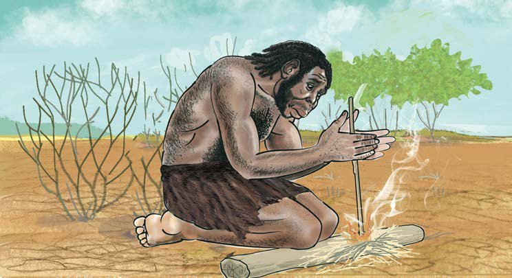

Chunguza zana katika kielelezo namba 2 na 3, kisha andika tofauti ya zana za Zama za Mawe za Kale na za Kati.
Pia, binadamu alianza kutengeneza nguo kwa kutumia ngozi za wanyama. Sayansi na teknolojia ya utengenezaji nguo kwa kutumia ngozi za wanyama ilifanywa kwa kuloanisha ngozi za wanyama na kuzipondaponda ili ziwe laini, kisha kutengeneza nguo. Aidha, katika Zama za Mawe za Kati binadamu aligundua moto.
Sayansi na teknolojia ya asili ya kutengeneza moto
Sayansi na teknolojia ya kutengeneza moto iligundulika katika harakati za utengenezaji wa zana, ambapo binadamu aligundua uwapo wa cheche za moto wakati akigongagonga na kusugua mawe. Pia, binadamu aliona cheche za moto zilizotokana na radi, wakati radi ilipopiga. Hii ilisababisha binadamu kufanya majaribio zaidi ya utengenezaji wa moto. Binadamu alianza kwa kupekecha vijiti viwili vikavu ili kupata moto. Kielelezo namba 4, kinawasilisha sayansi na teknolojia ya awali ya kutengeneza moto.
